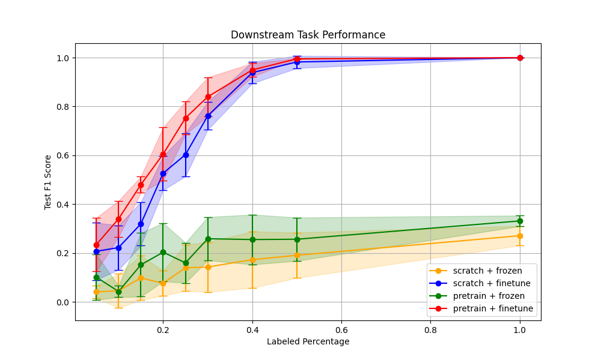
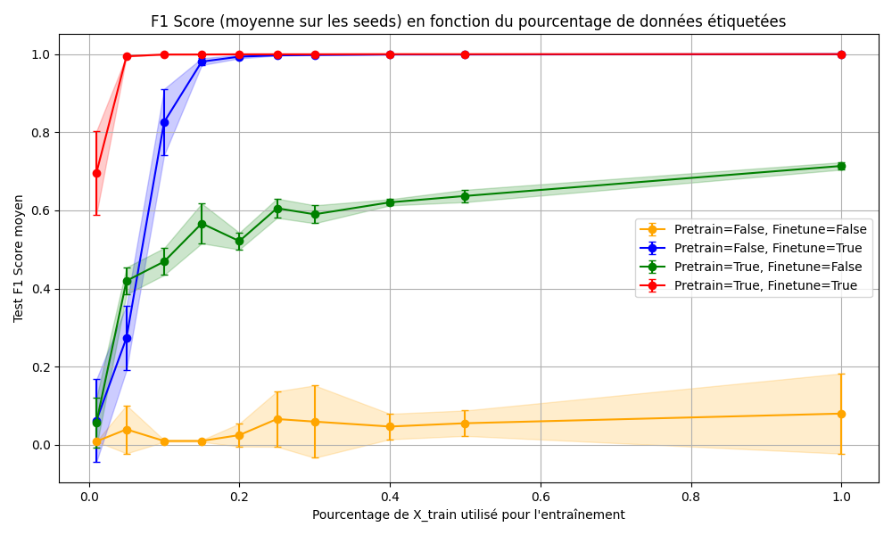

🟢 Fonctionnement Normal (Sain)
🔴 Défauts de Bille
🟠 Défauts de Bague Interne
🟡 Défauts de Bague Externe
📊 Analyse de Performance
Qualité de Reconstruction — Pré-entraînement
Pourcentage MSE par rapport à la variance totale — Ce tableau présente l'erreur quadratique moyenne (MSE) normalisée par la variance globale de la base de données (3,11×10⁻⁵). Plus la valeur est faible, meilleure est la reconstruction.
| Vitesse | Normal | Inner 7 | Inner 14 | Inner 21 | Outer 7 | Outer 14 | Outer 21 | Ball 7 | Ball 14 | Ball 21 |
|---|---|---|---|---|---|---|---|---|---|---|
| 1730 rpm | 0,12% | 3,60% | 2,51% | 6,18% | 2,74% | 10,39% | 2,00% | 1,05% | 7,37% | 2,21% |
| 1750 rpm | 0,10% | 3,45% | 2,41% | 5,54% | 2,51% | 5,96% | 1,90% | 1,61% | 12,56% | 1,88% |
| 1772 rpm | 0,10% | 3,62% | 2,72% | 5,52% | 2,52% | 6,20% | 3,03% | 1,83% | 6,09% | 2,27% |
| 1797 rpm | 0,14% | 4,34% | 2,74% | 6,32% | 4,63% | 21,19% | 37,56% | 2,25% | 7,11% | 1,85% |
| Moyenne | 0,11% | 3,75% | 2,59% | 5,89% | 3,10% | 10,94% | 11,12% | 1,68% | 8,28% | 2,05% |
Légende :
Performance en Classification (Fine-tuning)
Comparaison de l'impact de l'optimisation des hyperparamètres sur les performances en classification. Le graphique de gauche montre les résultats avec l'architecture initiale, tandis que le graphique de droite présente les performances après optimisation via Optuna.

Architecture initiale
Performances du modèle avec les hyperparamètres par défaut, servant de référence pour évaluer l'amélioration apportée par l'optimisation.

Architecture optimisée (Optuna)
Performances améliorées après optimisation des hyperparamètres, démontrant l'efficacité du tuning de l'architecture.
📈 Analyse comparative
Score F1 vs. Pourcentage de données étiquetées — Les deux graphiques comparent 4 configurations :
- 🔴 Backbone pré-entraîné + Fine-tuning complet
- 🔵 Backbone non pré-entraîné (from scratch) + Fine-tuning complet
- 🟢 Backbone pré-entraîné + Backbone figé
- 🟠 Backbone non pré-entraîné + Backbone figé
L'optimisation des hyperparamètres permet d'améliorer significativement les performances, particulièrement en régime de données limitées, démontrant l'importance du tuning d'architecture pour le transfert d'apprentissage.